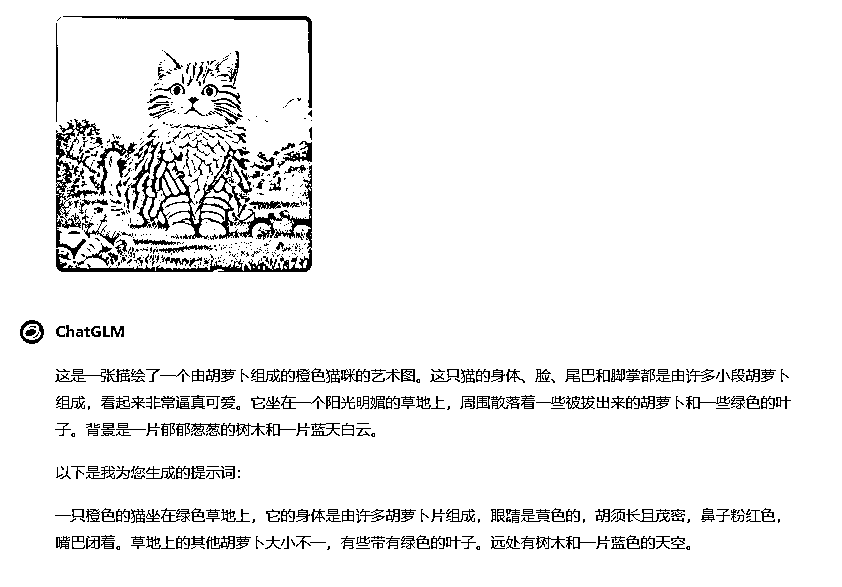
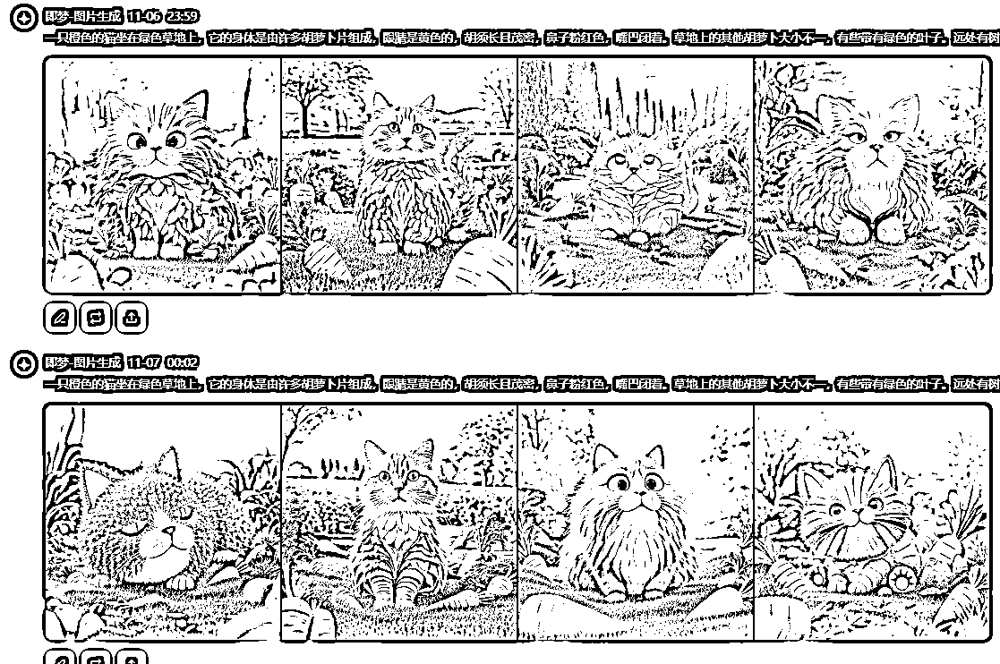
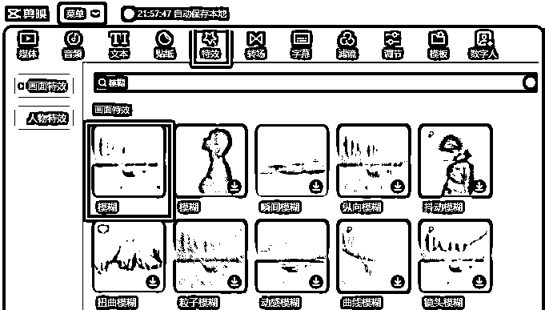
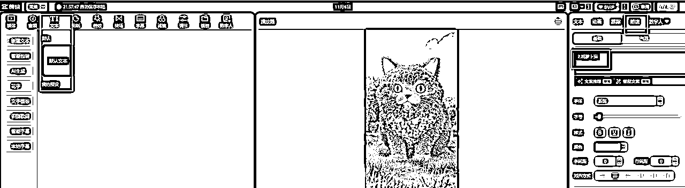
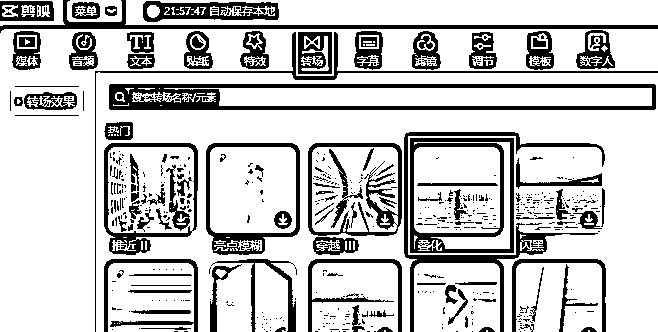
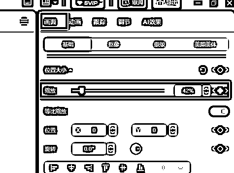
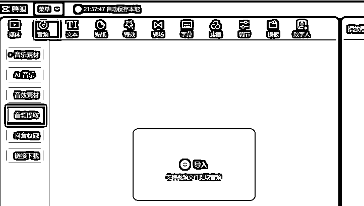

来源：https://gida8fb9mrg.feishu.cn/docx/KsYGd5uh6o41ERxoGCdc0aFtnfg
从视频上截图，然后使用质谱AI对图片进行反解析，再到生图网站生成图片。


生成的图片不一定像，一个是因为提示词不太准确，一个是AI本身就具有不确定性。
但生成次数多了，还是有比较满意的图片
先生成1:1的，然后再生成9:16的
接下来就是使用剪映，主要用到：
9:16的图片会进行模糊处理，一个是符合短视频的尺寸，一个是在1:1图片放大时显得更自然

视频中会有一些文字朗读，剪映上这个功能也是有的

叠化转场也是为了自然过渡，是在两段之间添加的

1:1图片从出场时小，慢慢变大，就是关键帧起的作用
选中1:1照片，在左上角画面中就有缩放的关键帧。

在音频这里就有提取的选项，提取之后就能直接使用
